Adventures on Bermuda and in Florida with Herb Wright and Bill Watts
by John Birks
Introduction
After my post-graduate year in 1970 in the LRC (with Hilary) and time at the LRC after the Klutlan Glacier expedition in 1971, I did not return to the LRC until 1975. I subsequently spent around 2–3 weeks there every April until 1982 pollen counting, using the reference collections, meeting new students (e.g. Dan Engstrom, David Foster, Sheri Fritz, Eric Grimm, George Jacobson, George King), discussing new ideas with Herb, Ed Cushing, and fellow visitors Bill Watts and Roel Janssen, and, of course, sediment coring, including collecting cores from some lakes that we were unsure of where there were because Herb had left the USGS maps behind in Pillsbury Hall! All my fieldwork experience with Herb until 1979 had been on frozen lakes in Minnesota, Wisconsin, or North Dakota or shallow ponds on the Klutlan Glacier in the Yukon Territory.
Bermuda
When Bill Watts suggested a coring trip to Bermuda in April 1979, I jumped at the chance to go as a ‘field helper’ with Bill and Herb. Bill’s interest in Bermuda was that it is the northernmost locality for the mangrove species Rhizophora mangle, Avicennia germinans, and Conocarpus erectus and that its native vegetation prior to human impact was dominated by the endemic Juniperus bermudiana and the endemic palm Sabal blackburnianum – a most unusual palynological mix!
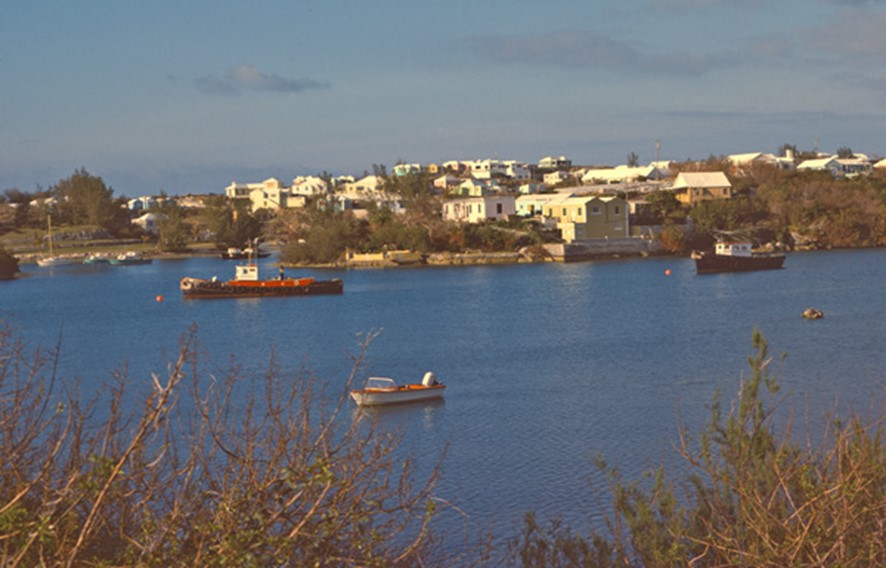
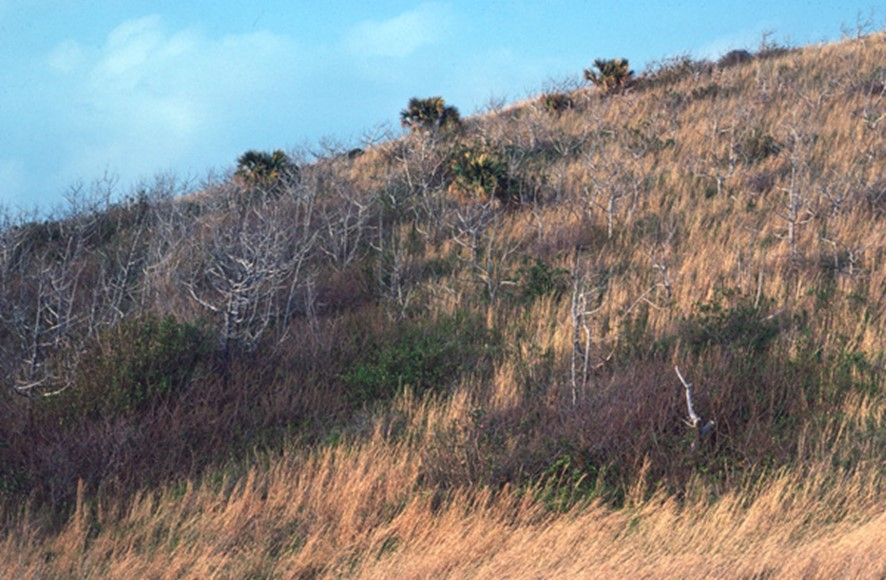
The three of us flew from the Twin Cities to Atlanta (Georgia) with corers, rods, etc., all wrapped up as single pieces of checked-in luggage and chain hoists as hand-baggage. After landing at Hamilton, the capital of Bermuda, we loaded up a taxi with our equipment and asked to go to the Bermuda Marine Biological Station (now the Bermuda Institute of Ocean Sciences) where Herb had arranged ‘accommodation’ for us. When we reached the Station, Herb suggested to me as Bermuda is ‘British’, the taxi-driver will need to be paid in UK pounds and Herb looked at me to pay. The taxi-driver quickly intervened and said “No man! We do not use them things as they are worthless. We only use real money – dollars!” So Herb had to find his wallet! In fact, Bermuda is a British Overseas Territory and its currency is the Bermuda dollar that is pegged to the US dollar.
Google describes working at the Bermuda Institute of Ocean Sciences today as a ‘once in a lifetime experience’. Staying in the ‘accommodation’ that Herb had arranged in 1979 certainly was a ‘once in a lifetime experience’ – dirty with broken windows, masses of cockroaches and mosquitoes, and decaying mattresses would not entice anyone to stay a second time. Bill immediately went to see the administration and we were upgraded from a zero-star room to two-star room! Bill also arranged for us to borrow a boat for coring, as the lakes in Bermuda were not ice-covered and Herb had not brought a boat with him.
Using taxis as our means of transport, we visited and tried to core four sites – Devonshire Marsh, Pembroke Marsh, Mangrove Lake, and Lover’s Lake.
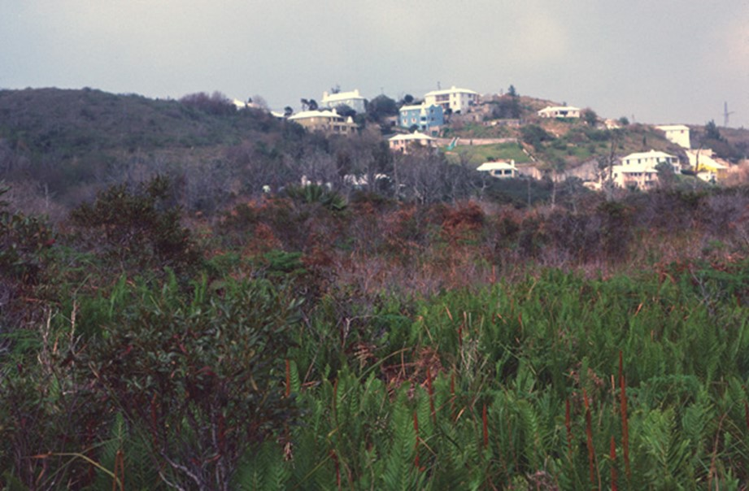
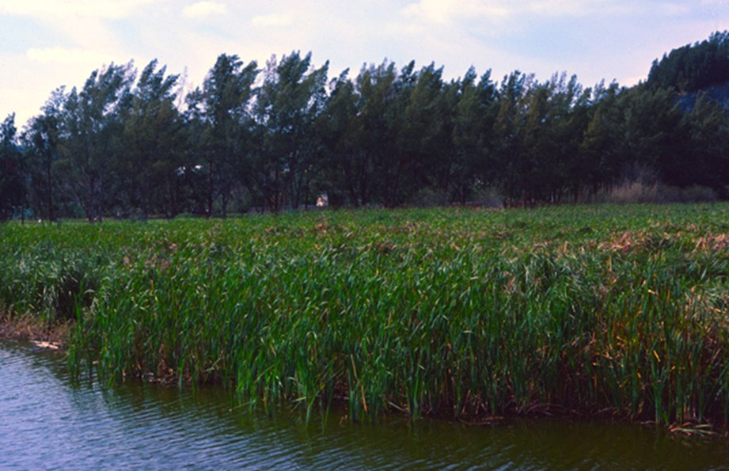
We failed miserably at Devonshire Marsh where over 30 m of fibrous peat had been reported. Needless to say, an in-need-of-much-repair square-rod Wright corer with a blunt cutting edge and no lockable square-rod failed totally and we left the Marsh with four sediment slugs of about 20 cm length of no possible scientific value. Bill and I botanised on the Marsh and found nice plants of Osmunda cennamonea, Myrica cerifera, and several Carex and Cyperus species. We also tried coring the nearby Pembroke Marsh without any success at all.
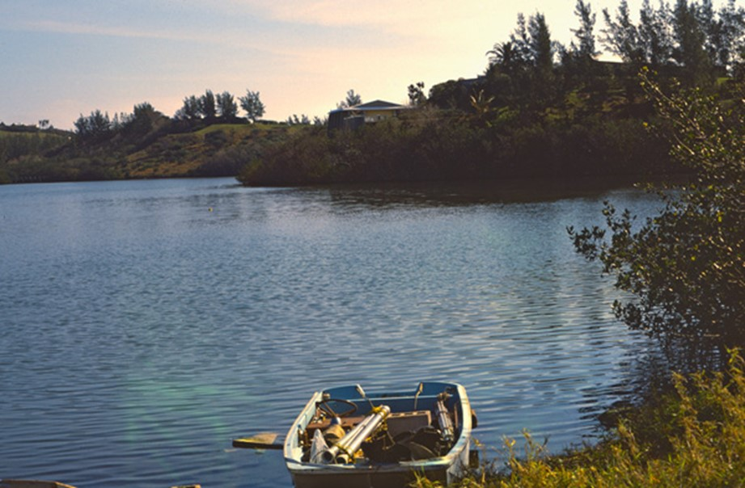
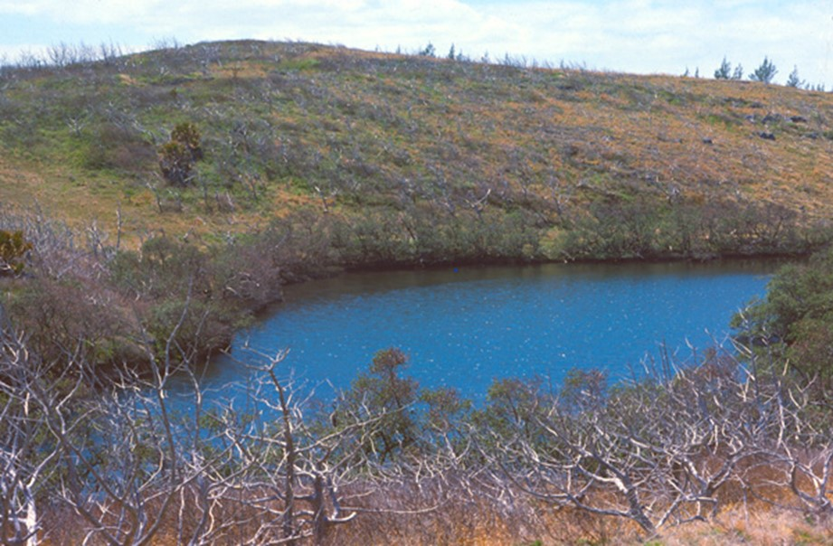
Next day we turned our attention to the few natural lakes on Bermuda, in particular Mangrove Lake. This is a small (1 ha) and shallow lake with a belt of Rhizophora red mangroves at the margins. It is surrounded in part by a golf course on dune-like hills and whilst we were coring, we heard golf-balls fall into the lake! It is separated from the sea by a ridge though which seawater and even tidal movements can penetrate (Watts & Hansen 1986). We raised over 15 m of sediment from under 160 cm of water. The sediments were like ‘rubber-mud’ wit sections of green, brown, or black banded layers, often with shells. The basal 3 m were brown fibrous hardened peat. The coring was surprisingly uneventful and the core extended to nearly 10,000 years ago. Barbara Hansen’s (Watts & Hansen 1986) pollen analyses show that the Holocene vegetation was dominated by Juniperus and Sabal. Pollen of plants that occur today in tropical southern Florida (e.g. Acrostichum fern) an south into the West Indies were present in the early Holocene. The mangroves Rhizophora and Conocarpus arrived on Bermuda in the late Holocene.
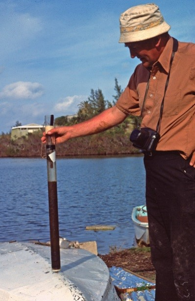
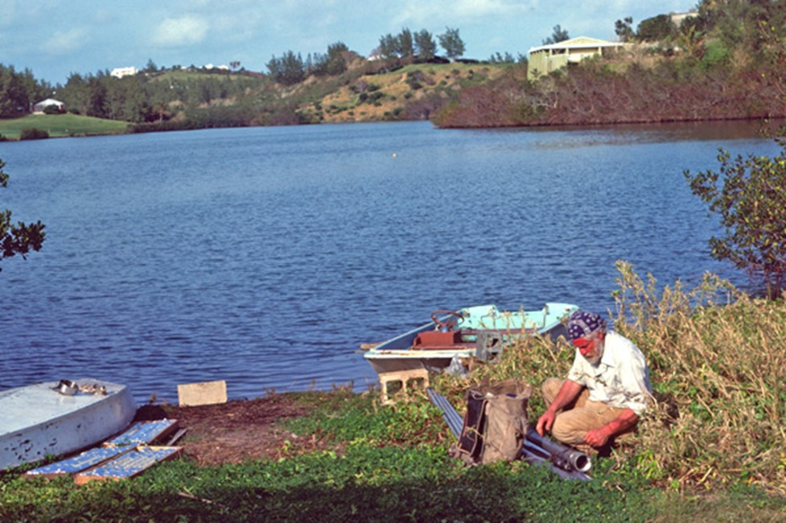
Lover’s Lake was difficult to reach because of its dense mangrove margins. Its sediments of about 1 m (mainly volcanic tephra) under 1 m of water were not worth the effort of getting them!
Bermuda was a fun trip – strange flora and vegetation, unusual lakes with unusual sediments, lovely bird fauna and the endemic Diamondback Terrapin in Mangrove Lake, curious mixture of British and American cultures, and surprisingly few coring or survival adventures.
Florida
In March 1980, I was fortunate to join Herb and Bill on a coring trip to northern Florida. The major aim was to try to obtain a longer and hence older core from Sheelar Lake near Gainesville in the Gold Head Branch State Park. Bill had previously obtained a 19 m sediment core from under 18 m of water and this core had provided a near-continuous pollen record extending back 24,000 years. Bill was keen to obtain an older record that could provide information about the origin and development of species-rich mesic deciduous forest in northern Florida (Watts 1980; Watts & Stuiver 1980).
Herb, as usual, insisted that he would ‘organise’ the coring equipment, the field-camp gear, and the food – dreadful mistakes on the part of Bill and me! We flew to Gainesville via Atlanta. As we were coming into land at Atlanta, the plane made a very steep sudden ascent, so steep that Herb stopped editing the manuscript he was working on and looked over his glasses. The pilot announced in a characteristic southern drawl “Gee folks, sorry about that but someone was trying to share the runway with us!” We safely reached Gainesville and we stayed with Tom Crisman, a former LRC post-doc. Next day we went to the Florida Museum of Natural History to meet Ed Deevey, a long-term friend of Herb’s and to beg or borrow two substantial boats to make a coring platform, some anchors, cross-ropes, etc. that Herb had forgotten to bring! After a delightful supper with Ed and his wife Georgiana at their lovely home by Lake Alice with its ospreys and alligators, we drove to the Gold Head Branch State Park and sat up our camp for several nights. Bill and I soon discovered what Herb had brought for our field-camp – no tents, three worn-out sleeping-bags, some plastic cups, bowls, and plates, a few broken plastic spoons, knives, and forks, and a half-empty packet of corn flakes. Bill was furious!

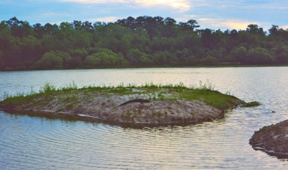
As it was getting dark, we rolled out our sleeping-bags. I noticed that Herb had found a dip in the surrounding sand and settled down in it. I started to follow but Bill whispered to me, “Not there! It’s an alligator’s trail. Herb will not be there in the morning!” Bill was right: Herb had moved his sleeping area by the morning. Breakfast was a silent affair – corn flakes and water and some weak tea were not the most exciting start to a long day’s coring in hot conditions. Bill, resourceful as ever, suggested Herb organise the boats and coring equipment while Bill and I drive into town and get some proper supplies. When we returned, Bill discovered that Herb had brought the most dilapidated, barely functional corer with not enough piston wire for 40+ m of water, some rods that did not fit together, not enough plastic or aluminium foil to wrap the cores in, and no water-depth gauge! Most atypically, Bill really lost his temper with Herb – the only time I ever saw Bill lose his temper in the 40 years that I knew him. Herb was silent and disappeared into town to find a hardware store, his saving grace on so many coring (mis)adventures.
After a good field lunch, thanks to Bill’s and my shopping, we set forth to the centre of Sheelar Lake for a long coring campaign. Besides Bill, Herb, and me, Sam Garnett-Jones, a post-doc of Ed Deevey, joined us. With 18 m of water and 18 m of casing, raising a 1 m core segment was an effort. By the end of the first day we had raised 12 m of sediment and we were tired. A spectacular sight was ospreys fishing in the lake and alligators in shallow waters at the lake’s edge in the early dusk.
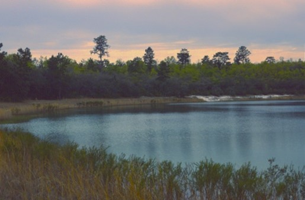
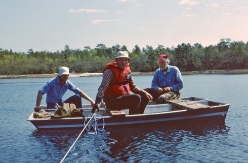
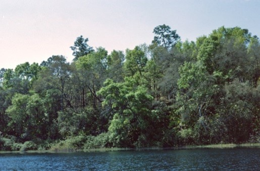
We experienced a typical Florida thunderstorm that evening, so we drove to a nearby restaurant for supper. Famished, Bill and I ordered large T-bone steaks with French fries, whilst Herb ordered a baked potato! The waitress looked at Herb and asked “What’s wrong with you, Beardie?” Herb very quietly said “I am in Florida”. End of conservation.
Next day we continued coring operations and the effort involved getting an extra metre of sediment increased as we had to keep adding casing. By 5 p.m. we had raised an additional 8 m of sediment and everything was going wrong – corer catching on the casing, casing and rods bending, lack of drive-force, and so on. We tried chain-hoists (brought by Herb as carry-on baggage) and perhaps penetrated a further 10 cm. Eventually we gave up, having only obtained an extra 110 cm of sediment to Bills original 1900 cm. In the dusk, we enjoyed watching the ospreys as we dismantled the coring platform, had a decent camp meal (Herb had a cold baked potato), and an uneventful night’s sleep.
During the next day, Bill introduced me to the flora and vegetation of the Gold Head Branch State Park of Pinus palustris, Quercus laevis, and a range of other oaks, many shrubs (e.g. Myrica cerrifera, Lyonia lucida, L. ferruginea), small palms, and heaths such as Ceratiola ericoides. A deep fire-protected ravine nearby supported a luxuriant mesic tree flora of Corya glabra, Liquidambar styraciflora, and Magnolia grandiflora, with a fine understorey of palms (Sabal palmetto, Serenoa reprens). I saw many unusual plants new to me including several insectivorous plants, strange ferns, palms, and climbers. It was my first (and last) encounter with New World sub-tropical vegetation.
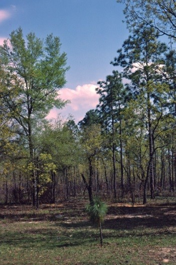
We then moved north in search of potential coring sites. That night, Bill drove us into a motel and booked a room for three people – Herb said two people; he was going to sleep out! Bill said nothing and after supper (Herb was now addicted to baked potatoes), Bill and I retired to bed. Bill fully locked our room. I asked “Is this because we are in Florida?” Bill answered, “No, it is to keep Herb out! He has not seen the weather forecast of major storms.” Sure enough at about 4 a.m. a very wet Herb was knocking on our door!
We visited the Torreya State Park along the Apalichola River and saw wonderful mesic forest wit Rhadidophyllum hystrix in opening, and Nyssa sylvatica floodplain forest. On the return from the Park, we stopped at a petrol station. Whilst Bill and I were filling up the monster vehicle, Herb went to a phone-booth to make a call. The garage proprietor’s dog went after him and started to pull at his trousers. The proprietor said to us, not realising that Herb was part of our group, “She is a damn good dog – hates hippies like that” pointing to Herb.
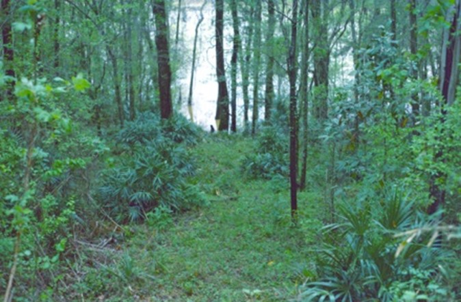

We tried several other lakes, but with little success – Deer Lake, Clear Lake, Camel Pond, and Lake Hall. This gave me the chance to see more of Florida’s vegetation and flora that I had read about in Bill’s papers about Lake Annie, Mud Lake, and Lake Louise, such as Ceratiola erocoides heath on sand-dunes, many different Pinus species (P. clausa, P. taeda, P. elliottii), and Taxodium distichium swamps at Manatee Springs.
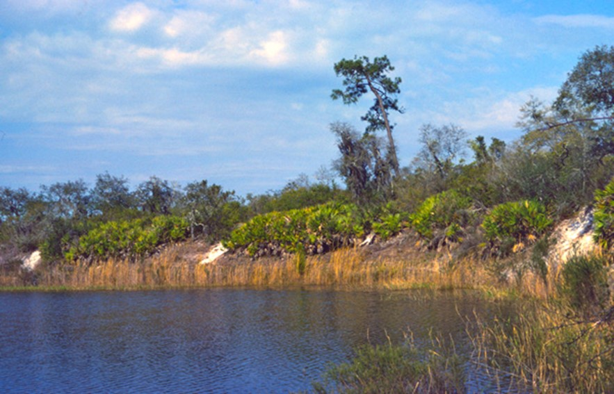
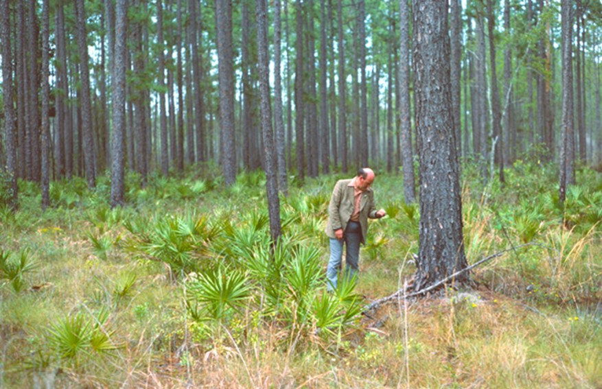
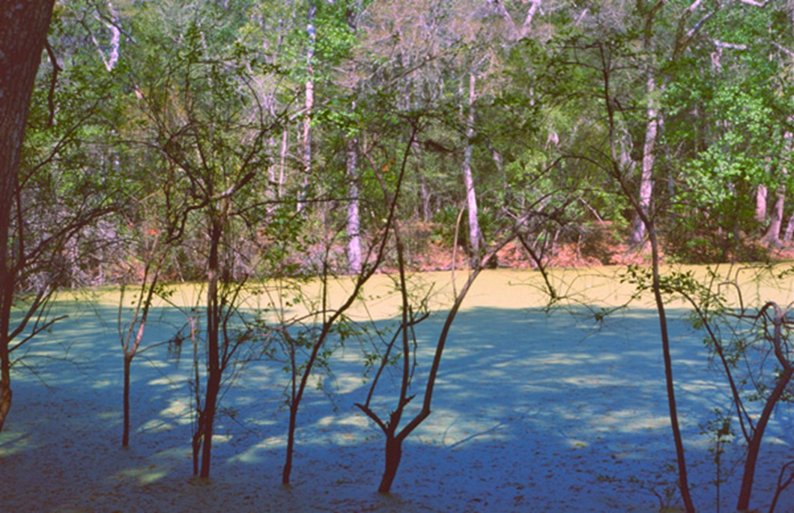
It was a really wonderful trip, despite the problems with field-camping, coring equipment, and tough sediments, and the “I am in Florida” attitude of Herb. I learnt a huge amount about open-water coring which has served me in very good stead in the last 30 years. I saw many new plants and vegetation thanks to Bill’s knowledge and generosity. Moreover I acquired a huge admiration for the work that Bill had done and went on to do on the vegetation history of the south-eastern United States. Nothing is easy there – good sites are rare, coring is difficult, the flora and its pollen flora are challenging, and interpretation can be difficult. I also realised what a remarkable pair of opposites Herb and Bill made in the field, both determined to find good sites and obtain good cores but how they went about fieldwork was somewhat contrasting!
References
Watts WA. (1980) The Late Quaternary vegetation history of the southeastern United States. Annual Review of Ecology and Systematics 11:387-409.
Watts WA, Hansen BCS. (1986) Holocene climate and vegetation of Bermuda. Pollen et Spores 28:355-364.
Watts WA, Stuiver M. (1980) Late Wisconsin climate of northern Florida and the origin of species-rich deciduous forest. Science 210:325-326.